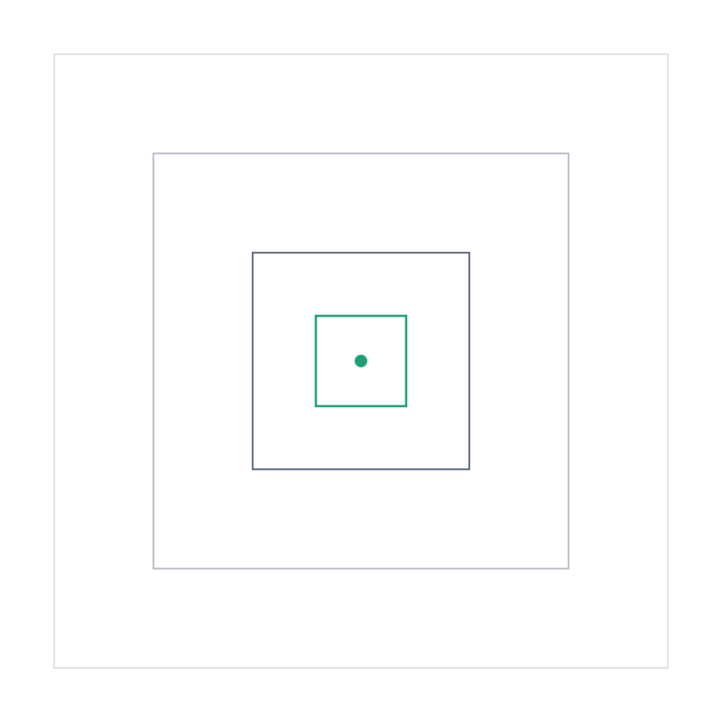
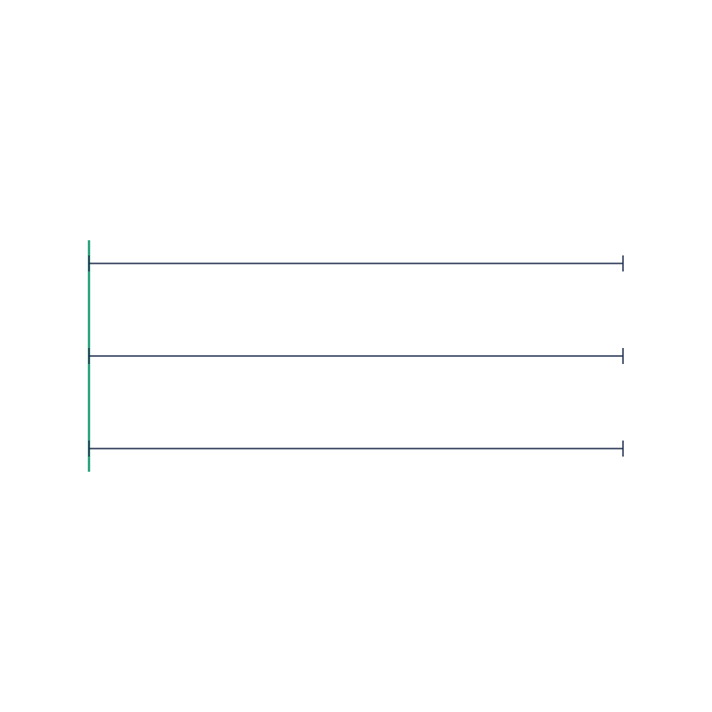
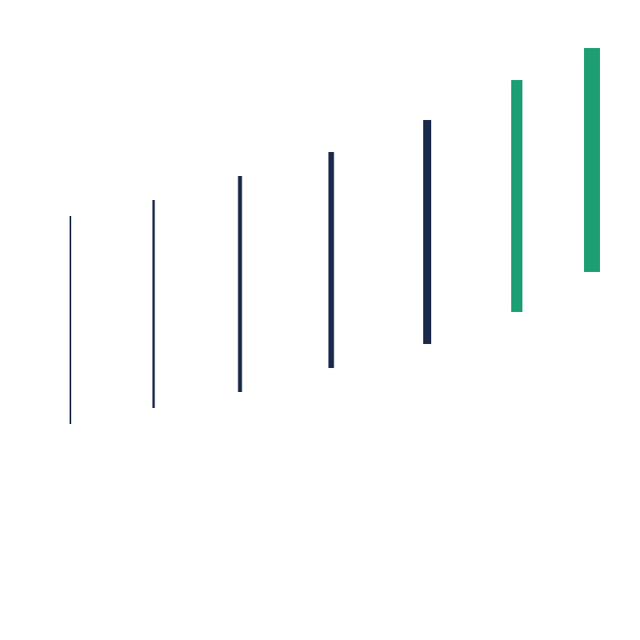

We work to assess what's going on, align the teams, and accelerate the delivery.
We front load clarity and stakeholder alignment, then deliberately pause at the anomalies and outliers that checklist approaches miss. We apply a founder and operator lens throughout, treating your business with the same ownership mindset and commercial judgment we bring to our own. Execution stays focused, time boxed, and measurable. Less ambiguity, less rework, a faster path to something that matters.

We frame the business problem and the expected outcome before proposing an answer. We define success and decision criteria for every stakeholder, and we pause at outliers to find root causes others move past.

We align stakeholders around priorities, constraints, and measures of success. Templates and benchmarks come in as leverage, never as a substitute for judgment. Options get evaluated through an operator lens and the path gets tailored to your business.

Work is time boxed to hold urgency, relevance, and scope discipline. We move from decision to delivery with clear ownership and practical tradeoffs, and we execute with the accountability we bring to our own businesses.
Many approaches optimize for checklist completion. We pause at the outlier others dismiss, because that is usually where the real constraint is hiding. Then we ask the question that actually decides things: what would we do if this were our own business?
Success is defined from every stakeholder's perspective before work begins, so there is a shared understanding of what gets delivered and why it matters.
We pause at outliers others dismiss and ask what we would do if this were our own business. That lens turns anomalies into insight and recommendations into practical decisions.
Templates and benchmarks bring accumulated knowledge into the engagement. They are applied as leverage, never as a one size fits all answer.
Work is bounded by time, clear outcomes, and explicit decision criteria, so momentum holds, changes surface early, and quality and timing stay protected.
A shared definition of the problem and the outcome.
Stakeholders working toward the same success criteria.
Less scope creep, less rework, less schedule risk.
Faster movement from decision to measurable result.
Clarity creates alignment. Ownership sharpens judgment. Alignment creates velocity.